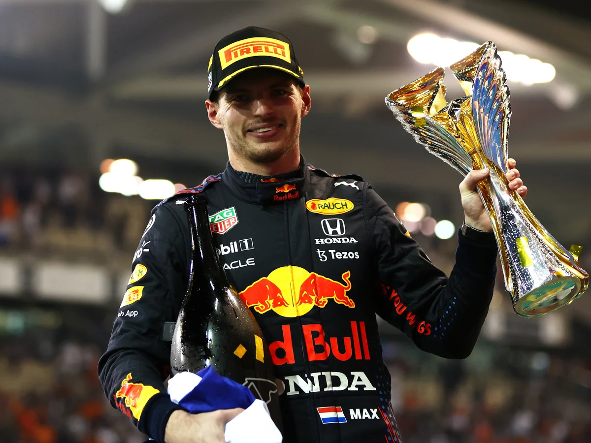

Olá! Meu nome é Diogo e vou contar um pouco sobre os hobbies e atividades que faço. Fora dos estudos, gosto de me exercitar na academia (treino de costas e tríceps são meus favoritos), jogar jogos competitivos online (sou competitivo), amo assistir esportes, principalmente, fórmula 1, e estou começando a gostar de cozinhar. Além dos hobbies, tenho algumas obrigações, como cuidar do meu cachorro, da minha casa e entre outros. Sou apaixonado por escutar estilos de músicas que eu gosto, por mais que eu seja bem eclético, e tenho certeza que escuto mais música do que 95% da população brasileira (eu acho).
